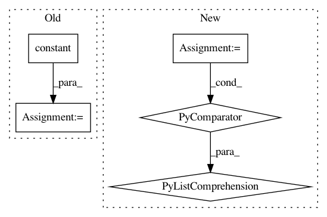

b6437e4dd115c5b290eb84b0620610b497293609,models/official/detection/serving/inputs.py,,raw_image_tensor_input,#Any#Any#Any#,59
Before Change
image_info_per_image = tf.stack(
[image_shape,
image_shape,
tf.constant([1.0, 1.0], dtype=tf.float32),
tf.constant([0.0, 0.0], dtype=tf.float32)])
if batch_size == 1:
images_info = tf.expand_dims(image_info_per_image, axis=0)
else:
images_info = tf.tile(
tf.expand_dims(image_info_per_image, axis=0), [batch_size, 1, 1])
After Change
dtype=tf.float32,
shape=(batch_size, image_height, image_width, 3))
image_info_per_image = [
[image_height, image_width],
[image_height, image_width],
[1.0, 1.0],
[0.0, 0.0]]
if batch_size == 1:
images_info = tf.constant([image_info_per_image], dtype=tf.float32)
else:
images_info = tf.constant(
[image_info_per_image for _ in range(batch_size)],
dtype=tf.float32)
images = placeholder
In pattern: SUPERPATTERN
Frequency: 4
Non-data size: 5
Instances
Project Name: tensorflow/tpu
Commit Name: b6437e4dd115c5b290eb84b0620610b497293609
Time: 2020-05-12
Author: pengchong@google.com
File Name: models/official/detection/serving/inputs.py
Class Name:
Method Name: raw_image_tensor_input
Project Name: Microsoft/nni
Commit Name: 55b557f17385ca10b8a3e8fb8bbb0d3799906db5
Time: 2019-11-20
Author: 38930155+chicm-ms@users.noreply.github.com
File Name: src/sdk/pynni/nni/compression/tensorflow/builtin_pruners.py
Class Name: FPGMPruner
Method Name: _get_min_gm_kernel_idx
Project Name: NifTK/NiftyNet
Commit Name: 984d17836d7a6240942cd44f2f61c92a427bb9bb
Time: 2018-04-24
Author: z.eaton-rosen@ucl.ac.uk
File Name: niftynet/layer/crop.py
Class Name: CropLayer
Method Name: layer_op
Project Name: reinforceio/tensorforce
Commit Name: 603026f0325339c6412e5c045b5149f351bd1778
Time: 2019-02-06
Author: alexkuhnle@t-online.de
File Name: tensorforce/core/optimizers/multi_step.py
Class Name: MultiStep
Method Name: tf_step